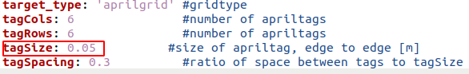
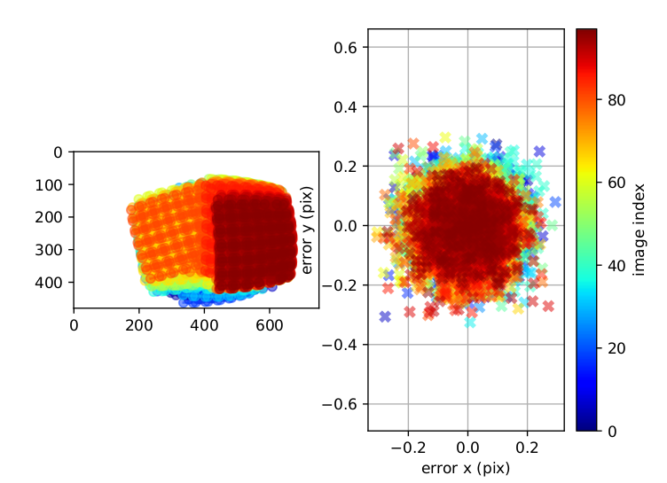

相机标定教程¶
CyperStereo相机提供了一份出厂标定文件，可以跑通VINS-MONO，VINS-Fusion，ORBSLAM3等开源项目，如果使用一段时间后，想要重新标定，可以参考如下文档。本教程基于ROS1实现。
1.kalibr安装¶
a.安装依赖
sudo apt-get install -y \
git wget autoconf automake nano \
libeigen3-dev libboost-all-dev libsuitesparse-dev \
doxygen libopencv-dev \
libpoco-dev libtbb-dev libblas-dev liblapack-dev libv4l-dev
sudo apt-get install -y python3-dev python3-pip python3-scipy \
python3-matplotlib ipython3 python3-wxgtk4.0 python3-tk python3-igraph
b.下载安装
mkdir kalibr_ws
cd kalibr_ws
mkdir src
cd src
git clone https://github.com/ethz-asl/kalibr.git
catkin_make
source devel/setup.bash
2.使用SDK中例程采集图像和imu数据¶
c.SDK安装
cd ~
git clone https://github.com/Cyperstereo/CyperstereoSDK.git
cd ~/CyperstereoSDK/samples
mkdir build
cd build
cmake ..
make
d.准备aprilgrid标定板
根据打印的纸张大小，在april_6x6_80x80cm.yaml文件中tagSize处填入相应的尺寸
e.启动相机Ros数据采集节点
cd ~/CyperstereoSDK/ros
source ./devel/setup.bash
rosrun CyperstereoRos capture_image_imu
f.录制数据 录制时参考kalibr的官方教程视频
手持相机在空中画八字，确保三轴都有运动激励
rosbag record -O cyperstereo_imu_calibra.bag /cam0/image_raw /cam1/image_raw /imu0

3.标定双目¶
rosrun kalibr kalibr_calibrate_cameras --bag ./cyperstereo_imu_calibra.bag --topics /cam0/image_raw /cam1/image_raw --models pinhole-equi pinhole-equi --target ./april_6x6_80x80cm.yaml

4.标定双目imu¶
imu参考标定文件
rosrun kalibr kalibr_calibrate_imu_camera --bag ./cyperstereo_imu_calibra.bag --cam ./cyperstereo_imu_calibra-camchain.yaml --imu ./bmi088_imu_param.yaml --target ./april_6x6_80x80cm.yaml
双目imu同步误差通过FPGA精确时序同步控制在1ms内

标定后的双目重投影误差应在0.2个像素误差左右
